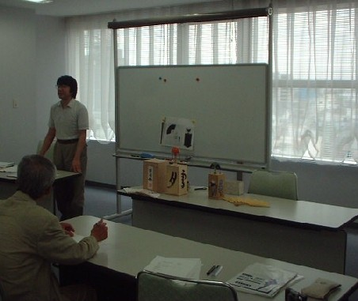

6/30、大阪で投扇興（とうせんきょう）というゲームの講演を聞いてきた。講師は高橋浩徳という方。投扇興という名前からも分かるように、扇を投げて遊ぶ遊戯だ。少し以前、300万円プレゼント番組というのがあった。そこで宿題ゲームとして登場したことがあるので、ご存じの方も多いかも知れない。

扇を投げて遊ぶのだから優雅といえば優雅なゲーム。そこで漠然と、「平安貴族のお座敷遊び」と思っていた。ところが聞いてみるとそうではなかった。なんと江戸時代に始まった新しいゲームだという。その他にもいろいろ、「へ〜、なるへそ」と思った。詳しいことは「投扇興」に行って貰えばわかるが、簡単に紹介する。
まず投扇興は扇や的が落ちたかっこうで得点を競うわけだが、この形に対する定めには、百人一首系と源氏物語系の２種類ある。
※扇が落ちた形に、「富士」とか「三笠」というように、百人一首からとった名前がついているのが百人一首系。「桐壺」「空蝉」「夕顔」など、源氏物語からとった名前がついたのが源氏物語系。
ところが定められた形といっても、源氏物語系でも５０くらいしかない。しかし実際には、じつにさまざまな形が発生する。そこで「こんな珍しい形ができたのに無得点とは！」なんてこともあるそうな。おまけに百人一首系と源氏物語系では、なんの関係もなく定められたので、百人一首系なら３０点になるような形が、源氏物語系だとマイナス１０点なんてこともあるそうな（思わず笑ってしまった）。
この投扇興、1770年頃（明和７年頃）、江戸庶民の遊びとして誕生したもので、平安貴族とは何の関係もない。江戸期には結構盛んに行われたが、末期には廃れてしまった。それが最近注目を浴びだしたら、あちこちのお寺さんやら何やらが其扇流（きせんりゅう）とか御扇流（みせんりゅう）などと流派を名乗り、家元としてなんだかんだとやっているそうだ。
名乗りたければ勝っ手に名乗るのは構わない。しかし箔をつけるためか、「王朝時代のゲーム」とか「平安貴族のゲーム」などと史実と異なるようなことを言ったり、庶民的でアバウトなゲームなのに、なんか格式張ったことを言いがちなのが困りもの、という高橋さんの話であった。
麻雀も元は庶民のバクチゲームとして誕生した。歴史にしたって、成立以来、まだ150年くらい。しかし日本伝来当初は、「元は中国宮廷の秘技であった」なんて説があった。
また東南西北が実際の方位と逆回りなことも、「人間が空を見上げた形で方位を考えると麻雀の方位と同じになる。これは麻雀が天上界の神々のゲームとして考えられた証拠」なんて説もあった。ウソというより、それだけ麻雀に思い入れがあった、あるいは神秘的に考えただけのことだとは思う。投扇興のなんとか流の話を聞いているとき、なんかそれを思い出してほほえましかった。(^0^)
う〜ん、なんとか最後に麻雀と関係づけたな。（笑）
|